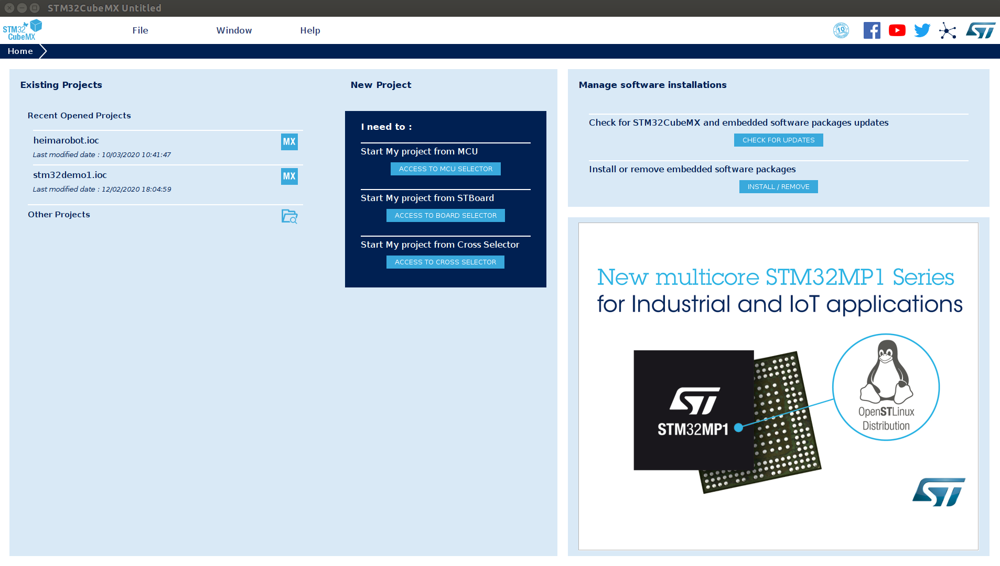

环境搭建¶
工欲善其事必先利其器,这一章节我们主要来给大家介绍如何搭建STM32的开发环境,这里我们使用软件工程师都熟悉的Clion开发.在后续的开发过程中,我们可以看到Clion要比传统的硬件开发软件Keil要好用的多得多!
安装stm32cubemx¶
cubemx是ST公司推出的一款非常方便的图形化工具软件,它让我们能够快速的对芯片引脚进行配置.
这里我们我们就先简单介绍一下它的安装步骤:
- 执行 jdk-8u181-windows-x64.exe,一路下一步,没有下一步就点击finish
- 解压en.stm32cubemx_v5.4.0.zip并执行SetupSTM32CubeMX-5.4.0.exe
- 点击下一步下一步就可以完成安装

安装完成之后，直接打开程序即可.

安装arm-none-eabi-gcc¶
arm-none-eabi-gcc是一个交叉编译工具链. 它让我们能在windows环境下对代码进行编译,然后代码可以在单片机里面运行.
解压arm的交叉编译工具
1 2 | |
配置到环境变量中
1 2 | |
安装OpenOCD¶
OpenOCD是用于对微处理器进行debug和烧写的工具, 简单来说就是帮我们把编译好的程序烧写进芯片中运行.
它的安装步骤同样比较简单.
解压openocd-20191216.7z
安装完成之后，可在解压目录的bin文件夹中执行如下openocd --version
1 2 3 4 5 | |
接下来我们还需要在Clion中对它进行相应的配置
配置文件¶
在你的安装目录/share/openocd/scripts/board目录下新建一个.cfg文件,文件内容如下，例如我新建了一个名为：stm32f103rct6.cfg`
如果是4线排针ST-LINK的话就写下面这段内容
1 2 3 4 5 6 7 | |
如果是20线排针Stlink的话就写这段内容
1 2 3 4 | |
Clion安装OpenOCD插件¶
在clion的插件面板中安装OpenOCD插件, 这样我们就可以很方便的利用clion将编译好的程序一键烧录到我们的开发板中去啦!
安装环境的过程,通常都是比较容易出错的. 大家把以上安装步骤全部搞定之后, 下一步我们就可以来进行STM32开发的学习啦!